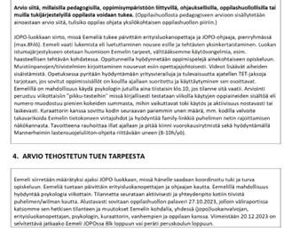

Tällä sivulla esittelen laajemmin, mitä asioita haluaisin painottaa opetuksessani.
Opettajana haluan olla innostava, jonka tunneille on aina kiva tulla. Innostavuuteen ja oppilaiden motivaatioon haluan vaikuttaa sillä, että oppilaiden mielenkiinnonkohteita otetaan huomioon opetuksessa. Englannin tunteihin on helppo yhdistää laajasti erilaisia aihepiirejä ja teemoja, koska internetistä löytyy tietoa lähes kaikesta englanniksi. Konnektivismin ideoiden johdattelemana haluan hyödyntää internetin laajaa tietovarastoa sekä mielelläni teettäisin oppilailla projekteja, joissa oppilaat opettaisivat toisilleen esitelmien tai postereiden kautta opeteltavia aiheita. Oppilaat pystyvät selittämään asiat sellaisella kielellä, että toiset ymmärtävät, kun opettaja taas saattaa sortua liian akateemiseen ja vaikeaan kieleen, jota oppilaat eivät sitten ymmärrä. Tämä on omakohtaisesti huomattu, kun yläkoulussa autoin luokkalaistani matematiikan opiskelussa. Hänen oltiin ajateltu olevan jotenkin huono matematiikassa, mutta toisen lapsen selityksen jälkeen hän ymmärsi oikein hyvin, miten käsiteltävät matematiikan ongelmat ratkaistaan.
Opetuksessani haluan tuoda laajemmin opetussuunnitelman laaja-alaisia tavoitteita osaksi opetusta. Esimerkiksi tietotekniikan ymmärrys ja turvallinen käyttö ovat nykymaailmassa lähes yhtä tärkeitä kuin perinteiset taidot: kirjoittaminen ja lukeminen. Tein ryhmätyönä opetusmateriaalin sosiaalisen median algoritmien opettamiseen yläkoulu- ja lukioikäisille oppilaille
Eriyttäminen on opetuksessa nykyään tärkeää, koska tasoerot oppilaiden välillä ovat kasvaneet. Eriyttämistä ei tarvita pelkästään maahanmuuttajataustaisten tai vieraskielisten oppilaiden kanssa vaan myös suomea puhuvat kantasuomalaiset tarvitsevat tukea oppimiseen. Kuitenkin tarvittavat tukimuodot saattavat vaihdella näiden ryhmien välillä. Suomalainen voi tarvita enemmän tukea koululaisen taitojen harjoitteluun, kun taas maahanmuuttajataustainen voi tarvita enemmän tukea suomen kielen heikon osaamisen takia.
Tässä ote fiktiivisestä pedagogisesta arviosta tehostettua tukea varten, mikä tehtiin ENOT-opintojaksolla (Erityispedagoginen näkökulma oppimisen tukemiseen)
